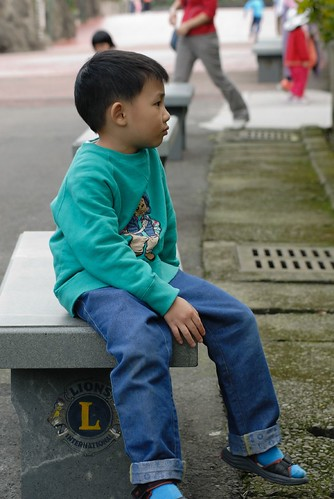

最近徹爸在翻看照片的時候發現了一件事
在每一次旅遊的照片中都有阿徹嘟嘟嘴生氣的模樣
也就是每次出去玩 阿徹幾乎都會生氣
對於這樣的發現 我很沮喪 很難置信
但仔細想想阿徹好像真的很容易生氣 雖然不願意我還是得接受
原來月初在動物園時 阿徹鬧的我們不歡而散並不是特例 …
那天去動物園到 聽了阿徹的建議先坐遊園車
然後看到鳥 去逛了鳥園
出了鳥園後阿徹便開始一心一意只要去看貓頭鷹
往下走要去夜行館看貓頭鷹前 會經過非洲動物區 亞熱帶動物區…
因為這是小愛第一次有參與感的動物園之行 (對各種動物比較感興趣 興奮了)
我跟徹爸想要讓小愛看看斑馬 長頸鹿 那些一般小孩都很愛的知名動物
可是阿徹直嚷著他要看貓頭鷹 他就是只要看貓頭鷹
我生氣了 徹爸也生氣了
徹爸說”我想去看大象 貓頭鷹最後再說了” 阿徹哭喪著臉 無奈的跟著我們走
以為他總算明白事情的先後
想不到他還是憋不住的又嚷了”我要看貓頭鷹”
然後徹爸頭也不回的說”回家了 都不要看了”
阿徹抗議了幾聲 可是還是低著頭跟著走
以為他接受了這樣的事實與處罰
想不到他還是一口氣難嚥的踢妹妹的推車
徹爸那怒不可抑的手當然就這麼”刮”下去了
然後我也生氣了…
因為我真的不喜歡大人突然對小孩”刮”下去的感覺

回家後我還是跟徹爸表明不能接受”刮”下去這事情
但徹爸說 下次他還是會”刮”下去 因為阿徹就是需要人”刮”
媽媽我忍不住想”我生的小孩真的有這麼糟嗎”
真的..真的..很難接受這事實
腦海中重新走過那天的路線…
當阿徹喊著要去看貓頭鷹時 我壓著性子跟他說
“你有你想看的東西 妹妹也有妹妹想看的東西 為什麼一定都要照你的意思ㄋ”
“看長頸鹿後走下去就可以去夜行館看貓頭鷹啦”
“如果先去看貓頭鷹要再往上多走路去看長頸鹿 所以先去看長頸鹿”….
其實如果當下跟阿徹說”看完長頸鹿後我們就去看貓頭鷹”
甚至就先去看貓頭鷹 再多走些路回頭去看長頸鹿 那也沒有什麼
我跟徹爸到底在堅持什麼 阿徹到底在堅持什麼
就在我努力替彼此行為解套的時候
徹爸跟我說了他的發現”每次出去玩 阿徹幾乎都會生氣”
媽媽我真的無力反駁了
以前還沒有小愛的時候 當然以阿徹為主
小愛還小的時候 也還是以阿徹為主
小愛大了 大部分也還是以阿徹為主
阿徹1歲多就會討買東西 所以2歲去日本的時候每天一樣小玩具
小愛到目前為止 為她而買的玩具不超過三樣
雖然出去街上晃盪時偶而也會說”買 要買 買Kitty”
可是總是悠悠的說聲”好吧”後後接受
前陣子當阿徹在便當店被我斥訊後說”你們都對妹妹比較好”
我真的有種氣到吐血的感覺
腦海中浮現妹妹說著好吧時候的臉跟當下紅著眼眶的阿徹
唉~要我怎麼說…
我還是跟阿徹說”你喜歡跟愛生氣的小孩玩 還是不愛生氣的小孩”
阿徹說”不愛生氣的”
我說”那你覺得你愛生氣還是妹妹愛生氣”
“家裡有哪一樣玩具 書書是為了妹妹買的”
阿徹哭著說”我…沒有…”
對 沒有…所以聽到你這麼說 媽媽我真的徹底的潰敗了
老實說看到這陣子愛生氣 甚至偶而會小小打一下媽媽的阿徹
我真的有點沮喪…
到底是5歲的小孩都會這樣反覆無常 情緒不穩定
還是是我們過度放大了小孩的行為表現
甚至懷疑起自己的教育方式哪裡出了問題
徹爸常說”其實阿徹很像我 所以就是不要理他 要對他嚴厲一點”
其實我跟徹爸都還蠻了解阿徹的性子 本質的
只是阿…人的要求是越來越嚴苛
尤其對於自己的小孩 甚至是兒子
套句徹爸常說的”你以後是要養老婆養小孩的 這樣以後怎麼養人家阿”
對~不勇敢 不堅強 怎麼養自己養人家阿
上週五跟阿徹老師難得的兩人”嚴肅的”好好聊了一下阿徹在校的行為
知道老師也在盯阿徹就好
老師說”想想他也不過中班 這樣也已經算好了” 也許吧~
不過起碼給了我些勇氣 調整些步調繼續走下去…
後記:昨天的周末阿徹又特乖 害我忍不住想我週五寫的這些是不是又是庸人自擾之了
徹爸說”希望阿徹都能這麼乖了”
我說”很難” 還是別期望太高失望太深的好
所以還是繼續樂觀其成的看待阿徹吧…